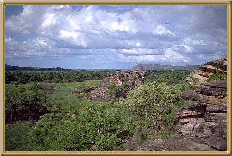

Photographer: Unknown
Arnhem Land is a vast area of Aborginal land, with some of the most distinctive rock art and x-ray style bark paintings. It's not as easy to get to as Kakadu or some of the other areas of the Top End of the Northern Territory, but it's sheer beauty and diversity alone make the trip very worthwhile.
This is the last in the series of photos for the Northern Territory. You can go to the map and see where you've been, or return home to choose another area.
It would be great if you could find time to sign my Guestbook before you move on!